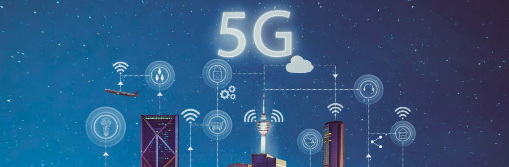
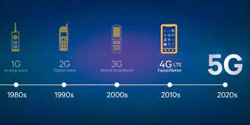
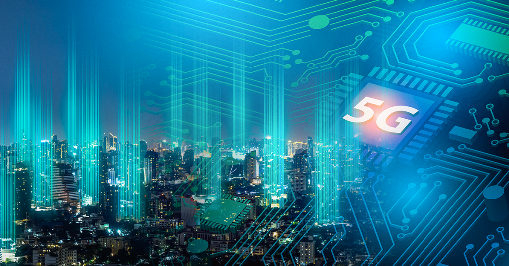
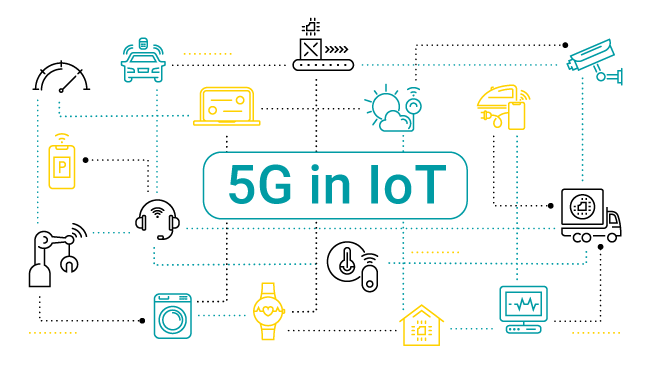

Tecnologia 5G
Introdução

A tecnologia está em constante evolução e crescimento, atinge todas as áreas e transforma o modo como as pessoas interagem com ela. Nesse sentido pode-se afirmar que a nova geração da Internet, a Internet de quinta geração, também chamada de Internet 5G, promoverá, possivelmente, um grande impacto não somente nas organizações públicas e privadas, mas também na vida das pessoas.
Esse impacto será causado, principalmente pelo fato de que a Internet móvel 5G será uma tecnologia que possibilitará a implementação da Internet das Coisas (Internet of Things - IoT) e, consequentemente, a possibilidade de alcançarmos as Cidades Inteligentes (Smarts Cities). O objetivo deste trabalho, pautado na pesquisa bibliográfica exploratória, é confirmar a necessidade de uma tecnologia com maior velocidade de transmissão e que suporte muitos dispositivos que estarão conectados num futuro breve.
O que é tecnologia 5g?

De acordo com a União Internacional de Telecomunicações, o 5G, ou quinta geração da telefonia móvel, é uma nova tecnologia de transporte de dados em redes envolvendo dispositivos móveis. Ele sucede gerações anteriores, mas autoridades e especialistas apontam que terá melhorias não apenas incrementais, mas qualitativas.
Enquanto a tecnologia 1G tinha velocidade de 2kbit /s e o 4G garantia tráfego de 1 Gbit /s, o 5G terá velocidade para baixar informações de até 100 1 Gbit /s. Enquanto a latência (diferença na resposta na transmissão de dados) era de 60-98 milissegundos no 4G, no 5G ela será reduzida para menos de 1 milissegundo. Já a capacidade de conectar dispositivos poderá abranger até 1 milhão de aparelhos por quilômetro quadrado.
Quais são os benefícios que o 5G pode trazer?

O 5G significa um avanço em relação aos padrões anteriores em uma série de aspectos:
-
Permite mais dispositivos conectados, o que está se tornando necessário diante do crescimento da chamada “Internet das Coisas”, com o crescimento da comunicação máquina a máquina;
-
Aumenta a velocidade de conexão, permitindo um consumo de serviços mais complexos com menos dificuldade, como a transferência de arquivos, comunicações em tempo real, o consumo de vídeos e áudios em tempo real (streaming) ou os jogos eletrônicos;
-
Diminui a reposta da conexão (latência), melhorando e contribuindo para que os dispositivos móveis tenham uma conexão que permita aplicações em tempo real ou que demandam trocas de informação de forma rápida;
-
Tem maior capacidade de banda, o que é importante diante do aumento de informações que são publicadas e circulam na internet, seja a criação de mais conteúdos ou a melhoria da qualidade, como no áudio ou na definição em vídeo;
De acordo com o Ministério da Ciência, Tecnologia, Inovações e Comunicações (MCTIC), o 5G é mais do que apenas uma melhoria das gerações anteriores. “As redes móveis 5G proporcionarão serviços avançados de banda larga móvel, com taxas de dados mais altas, menor latência e mais capacidade, que possibilitarão enorme potencial para novos serviços sem o de valor agregado”, diz no documento sobre a estratégia brasileira para a tecnologia, colocado em consulta pública no ano passado.
O 5G no mundo
De acordo com a associação mundial das empresas que atuam no segmento móvel, a GSMA, a expectativa é que até 2025 haja 1,2 bilhão de conexões 5G no mundo. Em alguns países ela já passou a ser adotada, como nos Estados Unidos, na Austrália, China, Finlândia, no Reino Unido, na Coreia do Sul e Áustria. Segundo estudo da GSA, das operadoras investindo em 5G, 42% são da Europa, 23% são da Ásia, 11% são do Oriente Médio, 8% são da América Latina e Caribe, 7% são da América do Norte, 5% são da Oceania e 4% são da África.
O 5G no Brasil
Operadora Claro e a fabricante Ericsson começam a testar 5G no Brasil em 2016, esta informação está baseada na entrevista dada na FUTURECOM pelos membros da diretoria da operadora Claro e do fabricante Ericsson no link acessado no dia 29 de novembro. Foi realizada a primeira demonstração do 5G no Brasil pela operadora Claro na FUTURECOM 2016 em São Paulo, indo nessa direção a operadora Vivo também está se adequando para essa tecnologia. A operadora Vivo afirma ter alcançado 530Mbps usando a sua própria infraestrutura na região metropolitana de São Paulo.

Desafios tecnológicos do 5G
Um dos maiores desafios hoje no Brasil é o espectro de frequências que está sendo utilizada em outros serviços e que tem que adequar a nossa realidade. Os fabricantes estão usando as operadoras como campo de testes afim de alcançar a meta dessas velocidades desejadas, os esforços de padronização para o 5G devem ser concluídos até 2020, uma vez que algumas operadoras iniciaram os trabalhos apenas neste ano, enquanto outras já estão dando os primeiros passos para a seleção de fornecedores de recursos utilizados para possibilitar esse tipo de conexão.
Impacto do 5G no IOT
A melhoria que a rede 5G consegue dar para internet das coisas pode fornecer casas inteligentes das quais conseguem ser mais seguras ao oferecer uma comunicação constante entre os aparelhos domésticos, criando uma noção das condições das quais elas se encontra;
industrias com maquinários conectados conseguem indicar onde é necessário um maior investimento e quando é necessário repara-los; um maior controle sobre o consumo de recursos pode ser obtido; cidades conectadas com capacidades de oferecer informações a veículos autônomos podem melhorar a rede de trânsito de automóveis; melhor monitoramento das cidades, seja para oferecer uma melhor segurança ao seus habitantes ou para uma melhor distribuição de serviços de água, esgoto e energia elétrica.
Em relação a rede anterior 4G, a rede 5G tem maior conectividade, maior velocidade e com menor latência, trazendo assim uma melhor experiência para o usuário e deixando a conexão máquina a máquina muito melhor e mais rápida.
No entanto, a implementação da 5G é algo que vai oferecer desafios para muitos países, seja por demora na instalação de equipamento para a sua utilização, seja pela popularidade da tecnologia no local ou seja simplesmente por falta de acesso da população a aparelhos que podem usufruir dela, problema do qual pode gerar um desinteresse de trazer a rede para a região.

Conclusão
De todas a tecnologias da Indústria 4.0, a IoT é a tecnologia que possui mais vínculos com o 5G, pois desde os desenvolvimentos elementares e da padronização do 5G são levadas em consideração aplicações para IoT. Além disto, os principais casos de uso da tecnologia 5G são pensados para serem aplicados em conjunto com a IoT. Nesse lançamento são considerados aperfeiçoamentos de latência e confiabilidade visando possibilitar uma maior variedade de casos de uso do IoT em conjunto com o 5G. Ou seja, o processo de padronização do 5G possui um release específico cujo principal foco é a IoT industrial por meio da qual poderão surgir ainda mais casos de uso para automação industrial. Enfim, o futuro da indústria será marcado pela fusão de entre as tecnologias dos domínios físico, digital e biológico. E tal fusão terá como base para sua efetivação as complementariedades entre o 5G e o IoT.
Referência
-
ARAUJO, Anne Caroline Gusmão de; ANDRADE, Pedro Henrique Lima. Internet das coisas: impacto da tecnologia 5G na internet das coisas. 2021.
-
DE LUCCA, Jefferson; MAURO, Paulo Sérgio Gaudêncio. Desafios da tecnologia 5G. Revista Interface Tecnológica, v. 17, n. 1, p. 29-39, 2020.
-
MARTINS, Francisco Tacizio. Tecnologia 5G: o futuro das redes móveis. 2016. OLIVEIRA, Ozias Santos da Conceição. REDES DE COMUNICAÇÕES MÓVEIS 5G: Contextualização a partir de uma revisão da literatura. 2021.
-
VALENTE, Jonas. Agência Brasil explica: o que é a tecnologia 5G. Agência Brasil, 2020.